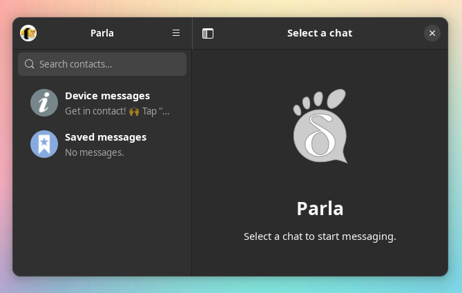

Runtime
sailfish-gnomeGTK4, libadwaita and their missing dependencies. Install it once alongside the apps that use it.
Runtime downloadsAn open toolkit for Sailfish OS
Bring GTK4 and libadwaita to your phone. Reusable libraries for Parla and the next wave of native Sailfish apps.
Built for Sailfish OS 5.1.0.11 / aarch64
01 / The building blocks
We package the libraries missing from Sailfish. The system libraries already on your device stay part of the stack.
sailfish-gnomeGTK4, libadwaita and their missing dependencies. Install it once alongside the apps that use it.
Runtime downloadssailfish-gnome-develHeaders, pkg-config files and Vala bindings. Compile your app against the matching runtime.
Build with the SDKRecipe + source archivesPinned upstream sources, build scripts, license texts and checksums ship with each release.
Explore the sourceThe first shared package release is being prepared.
| Library | Version | Purpose |
|---|---|---|
| GTK | 4.14.5 | Wayland widgets and rendering |
| libadwaita | 1.5.8 | Adaptive application widgets |
| Graphene | 1.10.8 | Graphics mathematics |
| libepoxy | 1.5.10 | OpenGL function dispatch |
| AppStream | 1.0.3 | Application metadata |
| libxmlb | 0.3.22 | Binary XML |
| WebP GdkPixbuf loader | 0.2.7 | Images and stickers |
Sass is used only during the library build. GLib, Cairo, Pango, HarfBuzz, GdkPixbuf, Wayland and other available libraries come from Sailfish OS.
02 / Made with this stack
A native Delta Chat client built with Vala, GTK4 and libadwaita. Encrypted conversations over email, with an interface that adapts to your screen.
Available for Linux, macOS, Windows and Sailfish OS. See each release for packages and installation instructions.

03 / For app developers
Download the runtime and development RPMs into your SDK project’s RPMS/ directory. Let mb2 install them as build dependencies.
Add these to your app’s RPM spec:
BuildRequires: sailfish-gnome-devel >= 0.1.0
Requires: sailfish-gnome >= 0.1.0# Runtime and -devel RPMs are in RPMS/
mb2 -t SailfishOS-5.1.0.11-aarch64 \
--search-output-dir build
# First run on a device
GDK_BACKEND=wayland \
GSK_RENDERER=cairo your-appIn CI, commit the release’s sailfish-gnome.lock and verify the pinned bundle hash before installing. Update it when you choose to upgrade the stack.
An evolving port
The initial target is Sailfish OS 5.1.0.11 on aarch64. This is an experimental Wayland toolkit port; WebKitGTK, introspection typelibs and a full GNOME desktop are outside this first package set. On-screen keyboard and GPU integration need testing on real devices.
Share a device report or contribute